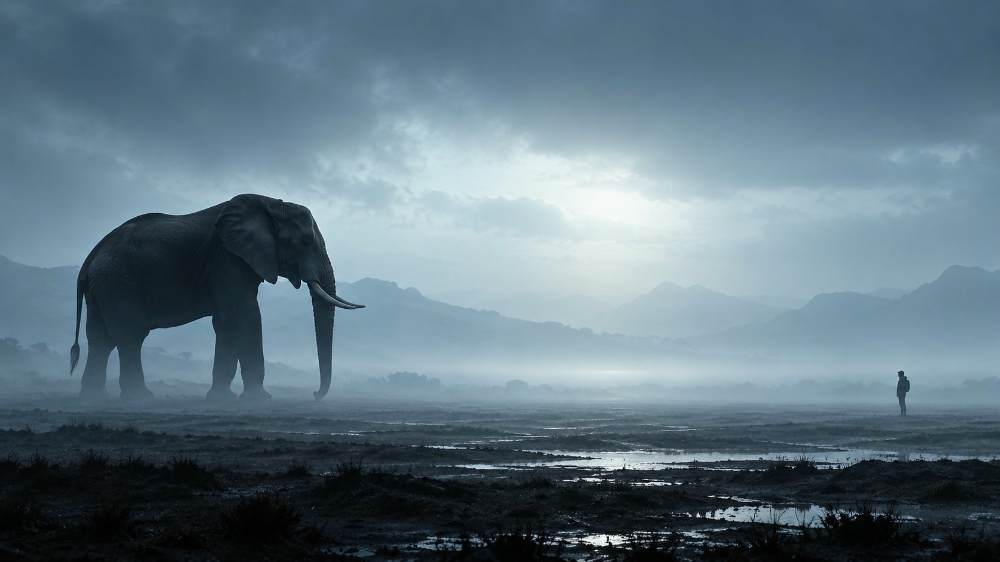

Dominance
What should command the first glance?
A PRACTICAL TOOLKIT FOR AI IMAGE CREATORS
Give your frame one strong idea.
Let the rest reveal itself slowly.
Turn hierarchy, scale, concealment and light into concrete prompt decisions — with a reusable method and twelve cinematic recipes.
17-page guide · Copyable prompts · Shot worksheet

01 / THE METHOD
Choose one dominant event. Build three to five broad tonal or colour masses around it. Keep the important contour clear and let secondary forms disappear into atmosphere.
The goal is a frame that holds together at thumbnail size, then rewards a closer look.
SIX CREATIVE CONTROLS
Numerical shorthand, translated into visual instructions.
What should command the first glance?
How does a giant shape relate to a small one?
Which information stays hidden?
Where does the frame breathe?
Which contour deserves clarity?
What broad field joins the scene?
02 / TRY THE METHOD
Awe through scale, silhouette and empty space.
The image above illustrates this relationship. It is not a guaranteed output from the prompt.
A massive elephant stands on the left third of a blue-grey mist plain. One person appears far to the right, under 5% of frame height. Make the elephant silhouette the immediate read; reveal wet skin and the small witness only on closer viewing. Group the image into dark elephant, slate ground and pale cyan fog. Reserve the centre and right for quiet mist. Keep the leading head contour clear and dissolve the feet into haze. Photorealistic cinematic texture, restrained bloom, no sunset orange.
03 / INSIDE THE FIRST EDITION
The full composition method, with a copyable settings block and an optional two-plane variant.
Translate six 0–10 controls into concrete instructions. Learn which combinations conflict.
From a hidden serpent and a quiet doorway to a procession, a product scene and a ship approaching a city. Each includes a correction note.
Plan one frame, evaluate its thumbnail and revise the relationship that is failing.
THE COMPANION WORKFLOW
Use the kit alongside these existing public resources. They are available separately and are not exclusive paid access.
Explore creative skills, storytelling and the decisions behind a frame.
Open KnowledgeCHOOSE A VISUAL LANGUAGEExplore 433 visual languages and study their palette, texture and spatial logic.
Open the AtlasWORK WITH THE PROMPTUse the companion tool while developing your composition instructions.
Open Prompt StudioFRAMECRAFT / FIRST EDITION
For AI image creators, filmmakers and designers who want to give the viewer a clear first impression.
COMPOSITION KIT
₹499First-edition price
Checkout opens soon
Purchases are not available yet. Explore the free sample while the first edition is prepared for release.
Get the free sampleA FEW PRACTICAL DETAILS
A downloadable PDF and text toolkit. It includes composition guidance, twelve prompt recipes and a worksheet. It does not include image-generation software or credits.
The instructions use plain language and can be adapted across generators. Interpretation differs by model, so expect to evaluate and revise outputs. The 0–10 controls express creative intention, not calibrated software parameters.
No. Knowledge, Atlas of Looks and Prompt Studio are separate companion resources. The paid product is the packaged guide, original recipes and working files.
You may adapt the original prompts for your own and client projects. Do not redistribute or resell the kit. This permission covers the toolkit text; output use also depends on your generation service and the content you create.